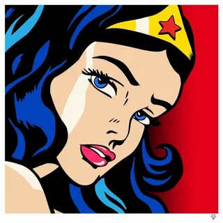

Поп-арт
Что такое Поп-арт?
Поп-арт — это яркое и динамичное направление искусства, возникшее в 1950-х годах. Оно вдохновлено массовой культурой, рекламой, комиксами и поп-иконами. В центре внимания — простые образы, яркие цвета и узнаваемые персонажи.
Примеры работ
